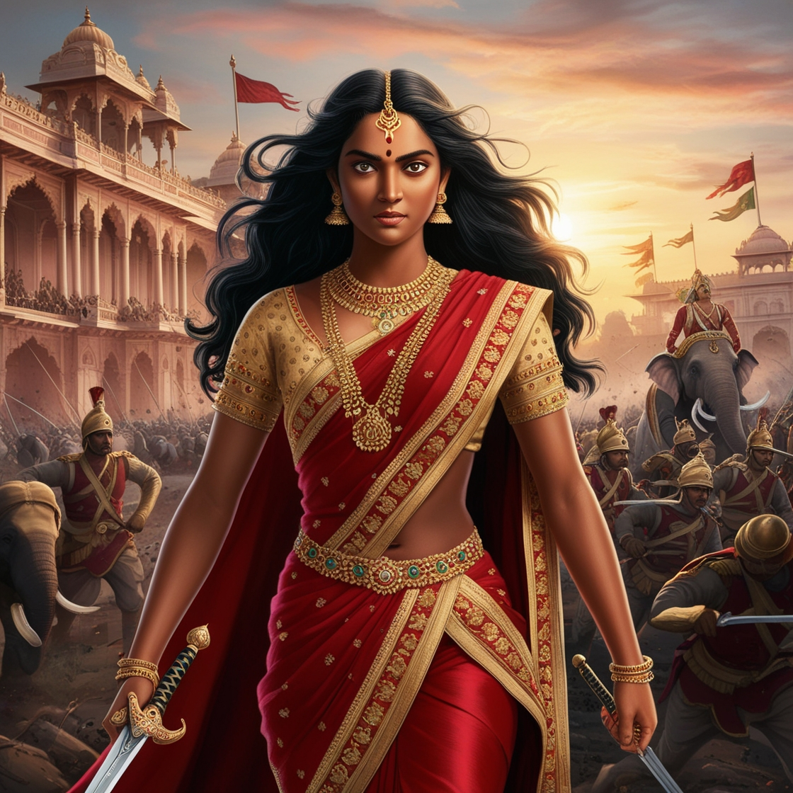

The Context of the Battle Muhammad of Ghor, a fierce military commander from the Ghurid dynasty, initiated a campaign to expand his empire into the Indian subcontinent. After defeating the Ghaznavids and establishing dominance in Punjab, he sought to conquer Gujarat, a region of immense wealth and strategic importance. In 1178 CE, with a formidable army, Muhammad advanced toward Gujarat, unaware of the formidable resistance he would face from Rani Naiki Devi, the regent of Gujarat. Rani Naiki Devi, the widowed queen of Raja Ajayapala from the Chaulukya (Solanki) dynasty, served as the regent for her young son, Mularaja II. Despite overwhelming odds, she demonstrated exceptional leadership and courage. With Gujarat’s survival at stake, she rallied local forces and allies, strategically selecting the narrow passes of Kasarhada (modern-day Kyara in Sirohi district, Rajasthan) as the battlefield to leverage the terrain against Muhammad’s numerically superior army.
